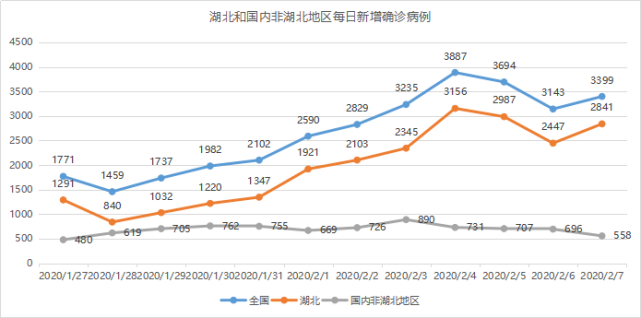
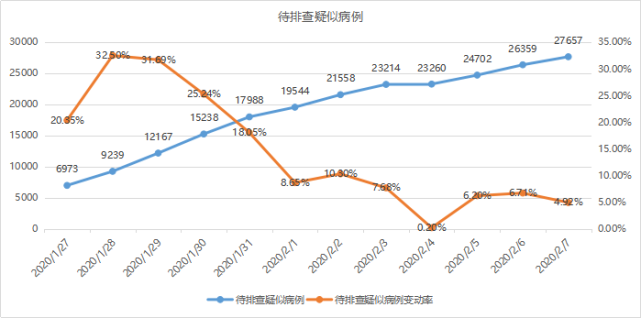
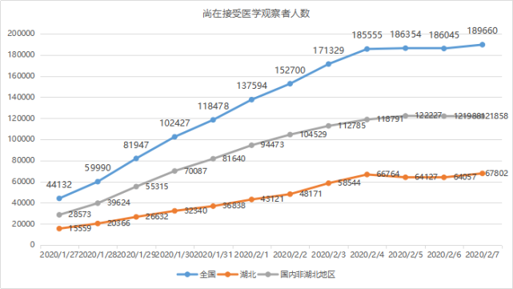
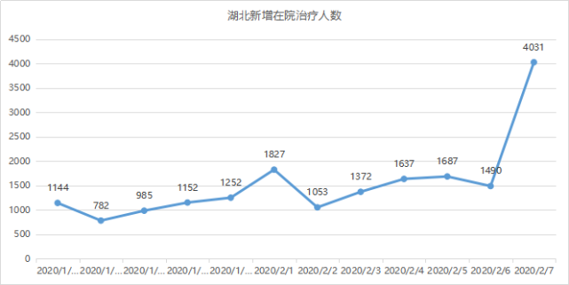
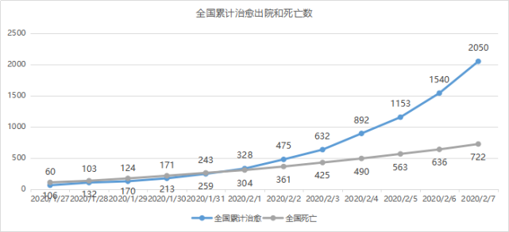
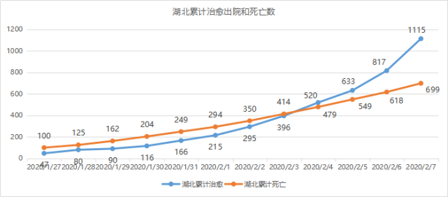

数说疫情0207：疫情增势继续趋缓
原文链接 备份链接 图/法新 文 | 徐进 1、 今日概况： 根据国家卫健委消息，截至2月6日24时，31个省（自治区、直辖市）和新疆生产建设兵团累计报告确诊病例31161例，累计治愈出院1540例，现有确诊病例28985例（其中重症病 …


图/法新
文 | 《财经》数据研究员 徐进
编辑 | 谢丽容
首先谢谢网友鼓励、拍砖。
1、 今日概况：
国家卫健委：截至2月7日24时，31个省（自治区、直辖市）和新疆生产建设兵团累计报告，现有确诊病例31774例（其中重症病例6101例），累计治愈出院2050例，累计死亡722例，累计报告确诊病例34546例（黑龙江省核减14例），现有疑似病例27657例。累计追踪到密切接触者345498人，尚在医学观察的密切接触者189660人。
图1

2、 武汉新增确诊病例数大幅反弹
图2

非湖北地区新增病例明显下降。减去武汉的增量，湖北非武汉地区新增病例也是下降的。
武汉的数据可谓一波三折。全力提升隔离、检测和收治能力，化解“堰塞湖”应是主因。
图3

据新华社7日报道：武汉近日提出“硬核任务”：加快核酸检测工作进度。目前，武汉已有35家相关机构开展核酸检测，单日样本检测能力由疫情暴发初期的200份提升到近期的数千份。预计2月7日、8日完成全部（积压下来的）检测任务。
希望很快看到结果。
3、确诊病例增长率继续下降
图4

湖北数据因武汉因素微弱反弹。非湖北地区增长率降到7%（10天倍增的速率）以下。依现在走势外推，未来一周非湖北地区新增病例有望下降为零或接近零。较大的挑战是即将到来的返工潮等因素，目前各地正在加大力度推出多种预防措施。
4、待排查疑似病例存量上涨，涨速略缓
图5

5、密切接触者追踪力度和存量
图6

_注：_密切接触者追踪系数=每日追踪的密切接触者增量/每日新增确诊病例数
图7

非湖北地区对密切接触者追踪力度明显加大，尚在接受医学观察人数平稳。湖北尚在接受医学观察者有明显增加。在院治疗出现近4000例的跳跃增长。应该是武汉全面提升隔离、检测、收治能力的体现。
图8

6、治愈人数远超病死人数
图9

图10

图11

累计治愈出院人数与病死人数继续拉大差距。湖北此数据也继续向好。
全国病死率微弱上升。
小结：非武汉地区继续向好。目前压力最大还是武汉。但愿在全国各方支援下，武汉“堰塞湖”及早化解。也愿湖北的非武汉地区不再出现大的“堰塞湖”。武汉加油！湖北加油！全国加油！

▲点击图片查看更多疫情报道
责编 | 黄端 duanhuang@caijing.com.cn
本文为《财经》杂志原创文章，未经授权不得转载或建立镜像。如需转载，请在文末留言申请并获取授权。
原文链接 备份链接 图/法新 文 | 徐进 1、 今日概况： 根据国家卫健委消息，截至2月6日24时，31个省（自治区、直辖市）和新疆生产建设兵团累计报告确诊病例31161例，累计治愈出院1540例，现有确诊病例28985例（其中重症病 …
原文链接 备份链接 制图 |《财经》视觉中心 根据国家卫健委消息，截至2月6日24时，31个省（自治区、直辖市）和新疆生产建设兵团累计报告确诊病例31161例，累计治愈出院1540例，现有确诊病例28985例（其中重症病例4821例）， …
原文链接 备份链接 【财新网】（记者 黄蕙昭 综合）武汉市中心医院门前放满花束。7日凌晨3点48分，武汉中心医院官微发布李文亮医生抢救无效过世的消息。当日，手持花束的市民自发前往武汉中心医院，悼念在工作岗位被感染的李文亮医生。他曾因“发 …
原文链接 备份链接 图/法新 文 | 徐进 是的！好转迹象就藏在数据更新中。据国家和湖北省卫健委公布的数据，截止到2月5日24时，有关数据分析如下： 1、新增确诊病例数由陡增转为下降 其中湖北新增确诊病例数结束连续一周的“步步高”由升转降 …
原文链接 备份链接 她反复确认我们工作人员的身份，就是不提供自己的信息，打了几次后来就不接了。 口述 | 郭翔 整理 | 王仲昀 我是上海市疾控中心的一名工作人员，原来在免疫规划所工作。新冠肺炎暴发后，中心成立了“追踪办”，我和另外23 …